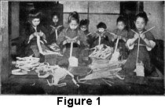

1922—Millinery
by Charlotte Rankin Aiken, B.A.
Chapter II—HAT STRAW AND STRAW BRAIDS
Most Important Material
Hats are made from many materials, of which true straw, woven into braid, is the most important. Until 1840, when looms were first adapted to straw-braiding, the different braids were made entirely by hand, but as modern industrial methods have been developed, more and more of the braiding is done by machinery, and only those countries where manual labor is cheap continue the hand-braiding, which was once a profitable industry.
Italian Straw Best
Straw braid is produced in many countries, but the; United States draws chiefly from China, Japan, and Italy. Wheat and rye straw for hats was grown in Massachusetts in the early part of the nineteenth century, but the industry was of slight importance.
The straw from the different countries varies in quality. Probably the finest is grown in northern Italy, where the industry has reached its highest development. The superiority of the Italian straw is due to climatic and soil conditions and to the fact that the wheat is raised largely for making hats and not for food, whereas in China wheat is raised to serve for both purposes. The method of sowing and cutting wheat raised for straw only differs greatly from the method used when the grain is intended for food. The latter method of cultivation produces an inferior grade and damages the straw for hat-making.
Climate and Soil
Even in Italy only certain areas are suitable in soil and climate for the production of hat straw. The seeds are sown very thickly on rich, light soil, on arid and rather high land. The stalks are very long and grow so thickly that they touch, thus supporting and protecting one another. This method of planting produces a fine, tall straw. If the weather is too wet, the straws will spot and rust, while if the climate is very dry and hot the straws become brittle. Straws will spot also when too ripe. The wheat seed is usually sown in March, and the crop is cut when the grain in the ear is only half developed.
Gathering and Bleaching
The straw is pulled up by the roots by hand, dried in the sun, and then made into small sheaves.
It must be pulled by hand so that the ends of the straw may be kept closed throughout the process of curing and bleaching to retain the pitch which would escape if the crop were cut with a scythe or by machine power.
Formerly, and even now to some extent, the bundles were allowed to lie in the sun during the day and in the dews by night, until after several days the straw became cured and bleached, but it is now generally cured under cover. If the bleaching is not done by the dew and sunshine process, the straw is bleached in sulphur fumes in a closed chest or by other chemical processes.
Sorting
The worker takes the sheaf of wheat between his knees and draws the straw out by handfuls. The wheat ears are cut off first; the top of the stalk—which is called a pipe because it is hollow—is then cut away so that only the lower nine inches are kept for plaiting. These nine-inch sections are sorted into sizes by letting them fall through several sieves with holes of different sizes, or through openings in a wire frame. Those which are discolored or spotted are separated from the rest and must be dyed, either in the pipe or in the plait. Bundles about four inches in diameter, containing sixty straws each, are made, tied, and sold for five or six lire per hundred bundles. (A lira is a silver coin worth about eighteen or nineteen cents.)
Centers of the Plaiting Industry
Tuscany in northern Italy has been the center of the plaiting industry for hundreds of years. In the eighteenth century the trade was very extensive, but in 1826 England began to manufacture her own braids and in 1875 competition began with Switzerland, Japan, and China. Although the industry in Italy has declined in relative volume, however, the Italian braid retains its superiority.
In Florence and in the regions surrounding the city more than 90,000 people make their living plaiting straw. In some villages the entire population, men, women and children, are employed. With flying fingers they work even while they walk along the street, carrying the straw wrapped in a damp cloth to keep it pliable and inserting new straws regularly without looking at the work.
In Italy, as in every country where hats are made, the work of making braids is carried on largely in the homes of the people, although much of it is done under the direction of men connected with large companies. Throughout the whole world, it may be noted, straw plaiting is done chiefly by women and children, though it is occasionally done by men, and men do the rougher work of gathering the raw material.
Method of Plaiting
The plaiter splits each pipe of straw into from four to nine pieces, except the straw for Tuscan braid which is woven whole. A small instrument called a "splitter" with a sharp point to go into the end of the straw and with knife-edge cutters radiating from it, is inserted at one end of the straw pipe. These cutters divide the pipe into even pieces.
The plaiter begins her braid with the required number of straws, which are not, however, of equal length. When she approaches the end of the shortest straw she inserts another single straw and continues to add new straws as they are needed. This leaves a fringe on the inside of the plait which is later cut away by scissors. The straw is held under the left arm of the plaiter and each straw is passed between the lips to moisten it before it is inserted, unless there is some other method of keeping it damp, as for instance wrapping it in a moist cloth. Each plaiter who uses the first method carries two or three straws in her mouth, ready for use. Seven is the average number of straws used, although the number ranges from four to fourteen. The varieties of plait are endless. Florentine dealers have exhibited more than 7,000 different patterns. An old couplet describes the method of weaving:
"Over one and under two, Pull it tight and that will do."
The plaiters get wretchedly small pay for this expert work from the middlemen to whom they usually sell their product. By working all day a woman can plait perhaps twenty yards of seven-end braid, which can be bought in the United States at less than a cent a yard, after middlemen and transportation charges are all paid.